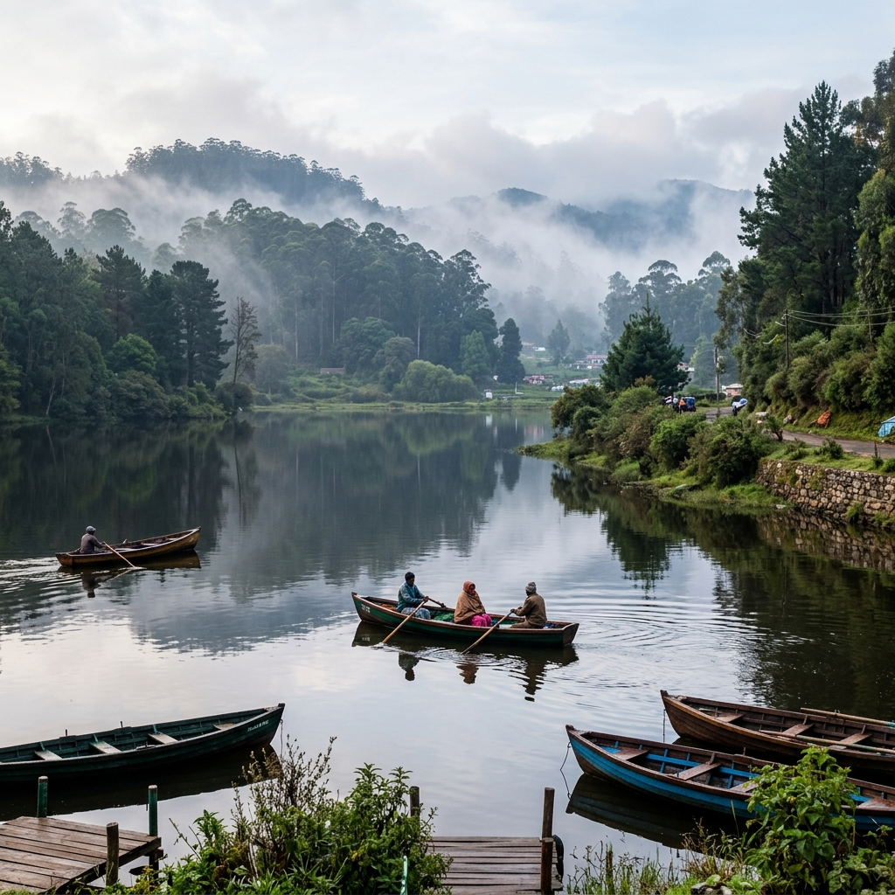
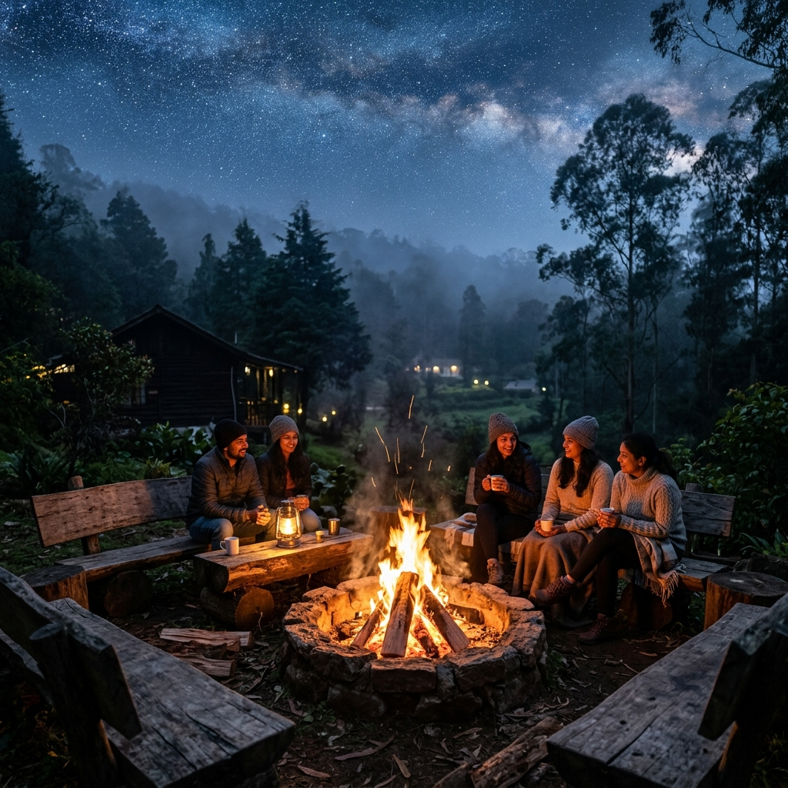
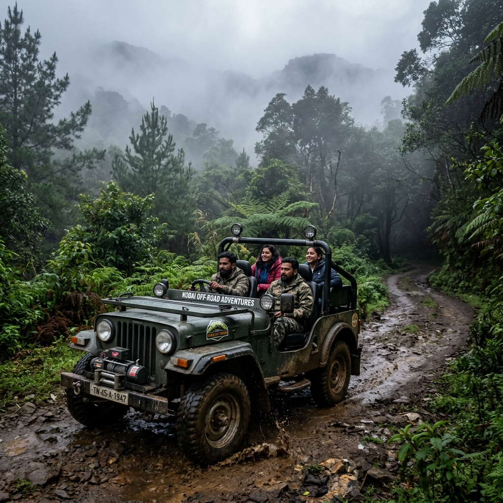

Must Visit High Lake
Kookal Lake
A pristine, tranquil high-altitude lake surrounded by lush green hills, misty pine woods, and rich flora.
 Cloud Nandy Hills
Cloud Nandy Hills
Cloud Nandy Hills · Poombarai, Kodaikanal
Premium camping cabins with stunning misty hill views, polished hospitality, and effortless booking for nature stays, family trips, and weekend escapes in Kodaikanal.
Stay close to the clouds
Cloud Nandy Hills combines cozy camping cabins with breathtaking misty hill views, transparent room rates, and helpful amenity information for weekend getaways, nature retreats, and longer escapes in Poombarai, Kodaikanal.
Rooms
Loading properties from Supabase...
Explore Kodaikanal & Poombarai
A pristine, tranquil high-altitude lake surrounded by lush green hills, misty pine woods, and rich flora.

Calm, clear waters ideal for peaceful boating rides surrounded by pine trees, fresh air, and mountain scenery.

Natural cascading waterfall hidden in untouched hill trails.

Spectacular valley vistas of terraced farms & hill village homes.

Rolling green meadows with endless mountain horizons.

Tour lush organic terraced farms & pick fresh produce.

Secluded waterfall stream nestled deep in forest foliage.

Charming highland farm with grazing mountain sheep.

Family-friendly sanctuary showcasing cute hill rabbits.

Tranquil reservoir famous for mountain sunset reflections.

Captivating viewpoint revealing rustic village step farming.

Dramatic ridge offering 360° Western Ghats views.
Hill Experiences & Activities

Gather around a crackling bonfire under the starry night sky of Kodaikanal. Enjoy music, storytelling, barbecue, and unforgettable cozy evenings surrounded by cool mountain mist.
Book Experience
Embark on guided trekking adventures across scenic pine forests, hidden streams, and panoramic peak viewpoints around Poombarai valley. Suitable for nature lovers and explorers.
Book Experience
Experience the authentic rural charm of Kodaikanal with a tour of lush organic terraced farms. Learn about local crops, pick fresh mountain produce, and savor authentic farm-to-table moments.
Book Experience
Feel the thrill of a rugged 4x4 Jeep safari through rugged forest trails, untouched mountain ridges, and dramatic viewpoint locations inaccessible by regular vehicles.
Book ExperienceAmenities
Cozy camping cabins with stunning misty Kodaikanal hill views.
Guided trails through Poombarai's lush forests and waterfalls.
Authentic Tamil Nadu meals with fresh local produce served daily.
Quiet location away from crowds — perfect for unwinding and relaxing.
Get In Touch
We'd love to have you here at Cloud Nandy Hills. Reach out for bookings, directions, or any questions.
No.5/166, Kochakanal Street, Gundupatti Road,
Poombarai, Kodaikanal,
Tamil Nadu 624103
Approximately 4 hrs 23 mins from Coimbatore / Madurai
4.8 · 310 Google reviews — Camping cabin in Tamil Nadu